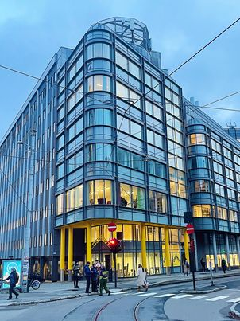

Bygget P35 ligger i Oslo under adressen pilestredet 35 0180 Oslo. Bygget tilhører universitet OsloMet som tilbyr 37 bachlerstuder, 67 masterstuder og 7 Ph.d-programmer. Selvet bygget P35 er oppkalt etter kjemikeren og kvinnesaksforkjemperen Ellen Gleditsch, som var Norges andre kvinnelige professor, ved Universitetet i Oslo.
